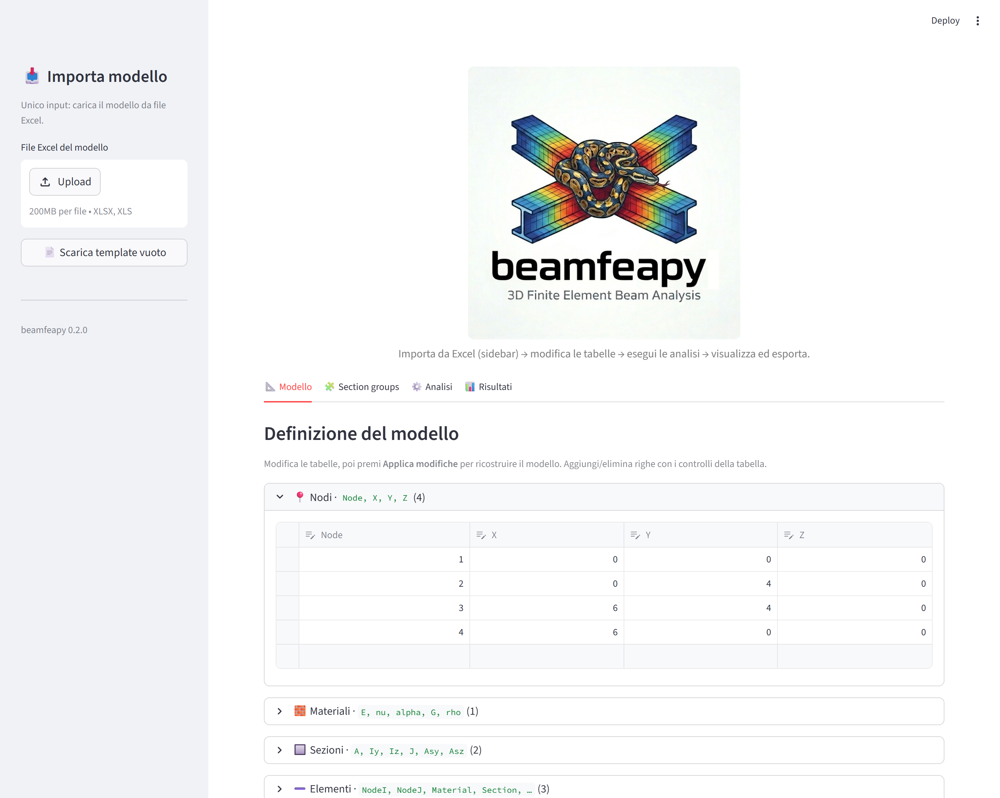
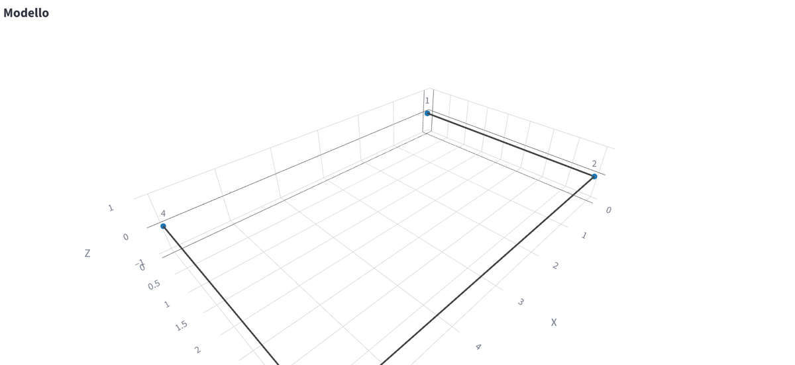
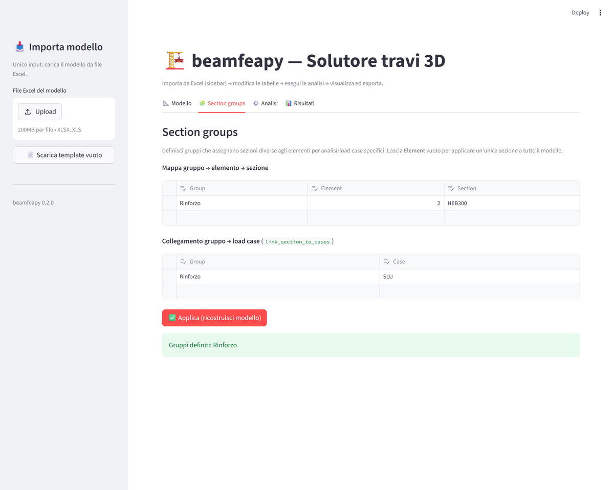
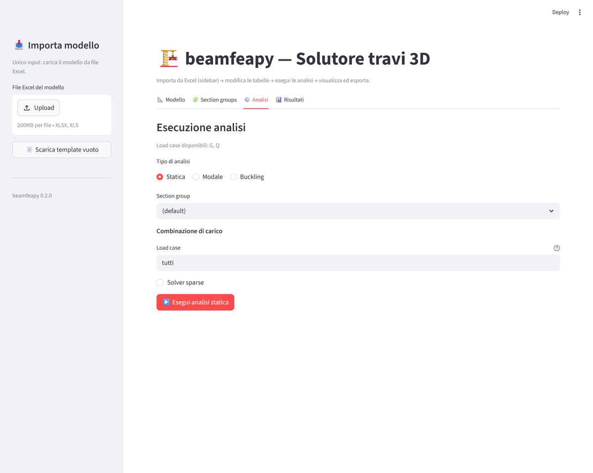
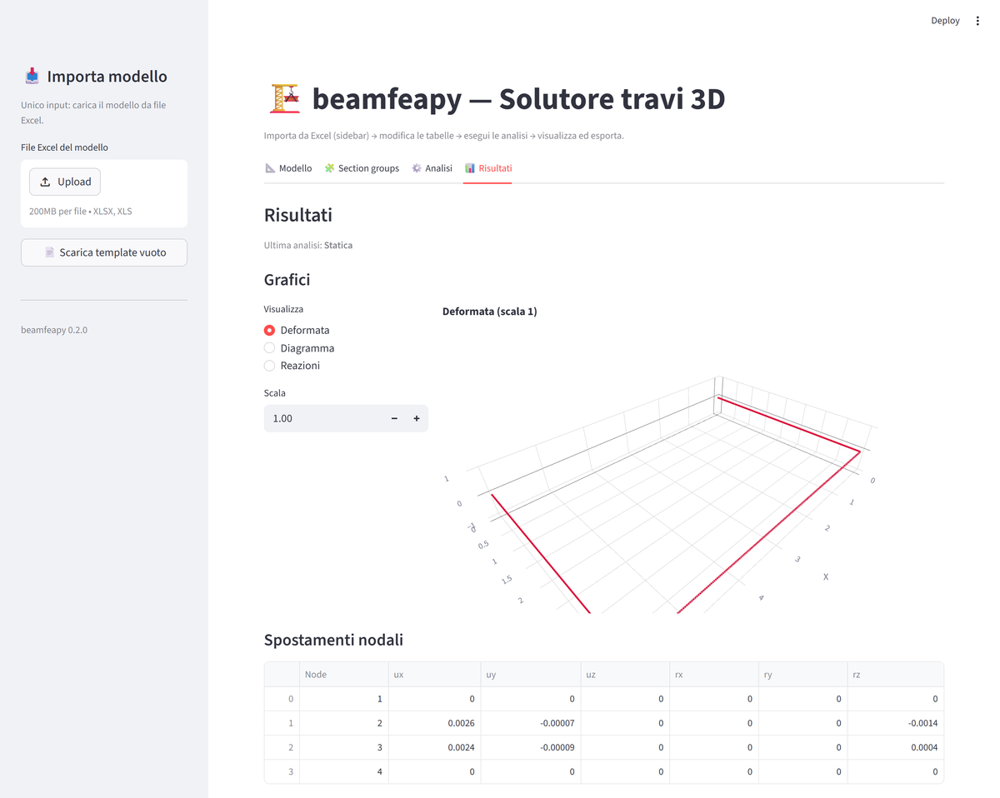
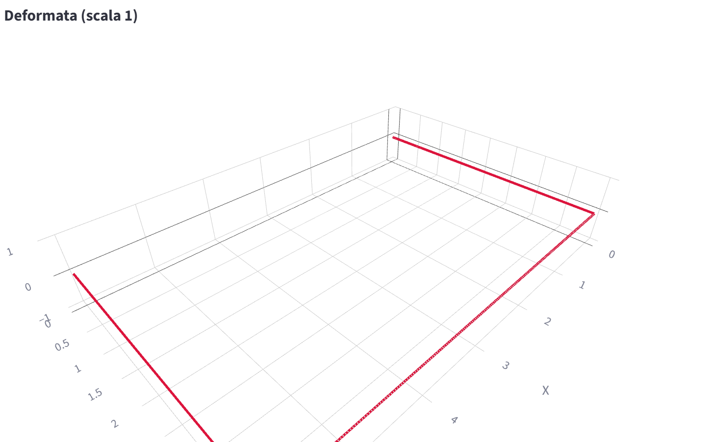
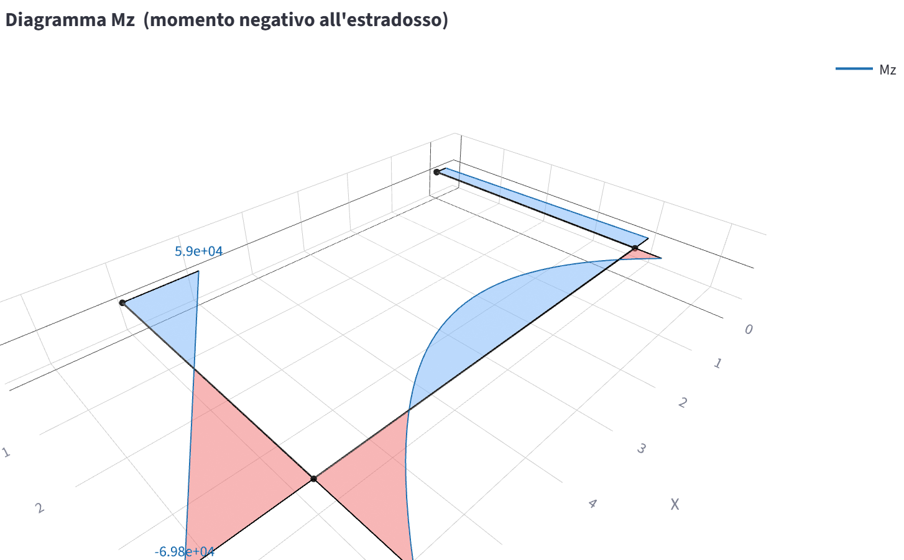

28 - Interfaccia Streamlit (UI)
beamfeapy include una interfaccia grafica web scritta in
Streamlit (app.py nella radice del repository) che
permette di costruire, analizzare e visualizzare modelli FEM di travi 3D
senza scrivere codice.
L'app è organizzata secondo un flusso lineare:
Importa da Excel (sidebar) → modifica le tabelle → esegui le analisi → visualizza ed esporta.
Avvio
Dalla cartella del repository:
pip install beamfeapy streamlit plotly openpyxl
streamlit run app.py
Il browser si apre automaticamente su http://localhost:8501.
💡 Modalità demo — per esplorare l'app con un modello già pronto (un telaio 3D con statica e modale già calcolate) avvia con la variabile d'ambiente
BEAMFEAPY_DEMO=1oppure apri l'URL con il parametro?demo=1(es.http://localhost:8501/?demo=1). Tutte le immagini di questa guida usano la modalità demo.
Panoramica del layout
L'interfaccia segue una regola precisa: la sidebar di sinistra contiene solo il caricamento del modello da Excel. Tutto il resto (modello, analisi, risultati) vive nell'area principale, organizzata in quattro tab.

| Zona | Contenuto |
|---|---|
| Sidebar | Upload del file Excel del modello + Scarica template vuoto. Nient'altro. |
| Tab 📐 Modello | Tabelle editabili (una per menù a tendina) di nodi, materiali, sezioni, elementi, vincoli e carichi + anteprima 3D. |
| Tab 🧩 Section groups | Definizione dei gruppi di sezioni e collegamento ai load case. |
| Tab ⚙️ Analisi | Esecuzione di analisi statica, modale e di buckling. |
| Tab 📊 Risultati | Grafici 3D, tabelle dei risultati ed export. |
Lo stato del modello è conservato in st.session_state: le modifiche
permangono passando da un tab all'altro.
1. Importare il modello (sidebar)
L'unico input nella sidebar è il caricamento di un file Excel. I fogli
riconosciuti (case-insensitive) sono Node, Material, Section, Element,
Support, NodalLoad, DistributedLoad, ConcentratedLoad, Thermal,
Settlement, Prestress — gli stessi descritti in
11 - Excel I/O.
- Upload → trascina o seleziona il file
.xlsx. Il modello viene letto e le tabelle dell'area principale si popolano automaticamente. - Scarica template vuoto → genera un file Excel con tutti i fogli e le intestazioni corrette, da compilare e ricaricare.
Non è obbligatorio partire da Excel: si può anche costruire il modello da zero compilando direttamente le tabelle nel tab Modello.
2. Tab Modello
Qui si definisce o si modifica l'intero modello tramite tabelle editabili
(st.data_editor). Ogni tabella consente di aggiungere righe (riga vuota in
fondo) ed eliminarle (selezione riga + tasto cestino).
Ogni tabella è racchiusa in un menù a tendina (expander) con icona, elenco delle colonne e numero di righe mostrato tra parentesi nel titolo. In questo modo si visualizza solo la tabella che interessa, mantenendo la pagina compatta. All'apertura del tab è espansa solo la tabella Nodi; le altre si aprono con un clic sul rispettivo titolo.
Le tabelle disponibili (un menù a tendina ciascuna):
| Tabella | Colonne principali |
|---|---|
| Nodi | Node, X, Y, Z |
| Materiali | Material (nome), E, nu, alpha, G, rho |
| Sezioni | Section (nome/ID), A, Iy, Iz, J, Asy, Asz |
| Elementi | Element, NodeI, NodeJ, Material, Section, shear, RefX/Y/Z, ReleasesI, ReleasesJ |
| Vincoli | Node, Dx, Dy, Dz, Rx, Ry, Rz (spunta = grado bloccato) |
| Carichi nodali | Node, Fx..Mz, Case |
| Carichi distribuiti | Element, Component (fy…), qi, qj, a, b, frame, Case |
Note pratiche:
- Materiali e sezioni sono riferiti per nome nella tabella Elementi: il nome deve corrispondere esattamente.
ReleasesI/ReleasesJ: svincoli ai due estremi, come lista separata da virgola (es.rz,ry).RefX/Y/Z: vettore di riferimento per orientare la sezione (vedi 08 - Orientazione Sezione); lasciare vuoto per l'orientazione di default.a, bdei carichi distribuiti sono normalizzati in [0, 1] lungo l'elemento;framepuò esserelocaloglobal.
Applicare le modifiche
Il pulsante ✅ Applica modifiche ricostruisce l'oggetto Model a partire
dalle tabelle. Gli input vengono validati (numeri, riferimenti a nodi e
sezioni esistenti, ID duplicati): eventuali errori vengono mostrati con un
messaggio rosso senza far crashare l'app. A modello valido compare il
riepilogo (numero di nodi, elementi e sezioni).
Con il pulsante ⬇️ Esporta modello (Excel) si riesporta il modello corrente in formato Excel ricaricabile.
Anteprima 3D
In fondo al tab è disponibile un'anteprima interattiva (Plotly) con tre viste selezionabili: Geometria, Assi locali e Carichi (per load case).

3. Tab Section groups
I section group permettono di assegnare sezioni diverse agli elementi in funzione dell'analisi o del load case (utile, ad esempio, per fasi costruttive o per stati limite con sezioni fessurate/integre).

- Mappa gruppo → elemento → sezione: ogni riga associa, all'interno di un
gruppo, un
Elementa unaSection. LasciandoElementvuoto la sezione indicata viene applicata a tutti gli elementi del gruppo. - Collegamento gruppo → load case (
link_section_to_cases): associa un gruppo a uno o più load case, così le analisi possono rilevarlo automaticamente.
Il pulsante ✅ Applica ricostruisce il modello includendo i gruppi. I gruppi definiti vengono poi proposti nel menu a tendina del tab Analisi.
4. Tab Analisi
Si sceglie il tipo di analisi e i relativi parametri, poi si preme ▶️ Esegui. Il risultato viene salvato in sessione e mostrato nel tab Risultati.

Per tutte le analisi è possibile selezionare un Section group (oppure
(default)).
Statica
Campo Load case flessibile:
| Sintassi | Significato |
|---|---|
tutti (o vuoto) |
somma di tutti i load case |
G |
singolo load case |
G, Q |
più load case (coefficiente 1) |
G:1.35, Q:1.5 |
combinazione con coefficienti |
Opzione Solver sparse per modelli di grandi dimensioni (vedi 12 - Solver Sparso).
Modale
Parametri: numero di modi, accelerazione g, e mass_source (sorgente
di massa dai load case, es. G:1.0, Q:0.3).
Vedi 19 - Analisi Modale.
Buckling
Parametri: numero di modi e load case di riferimento (con la stessa sintassi della statica). Calcola i moltiplicatori critici λ.
5. Tab Risultati
Il contenuto si adatta all'ultima analisi eseguita.

Statica
- Grafici: Deformata (con fattore di scala), Diagramma delle azioni
interne con componente selezionabile (
N, Vy, Vz, T, My, Mz), Reazioni. - Tabelle: spostamenti nodali, reazioni vincolari e azioni interne lungo un elemento (numero di punti regolabile).
Il selettore Visualizza a sinistra del grafico commuta tra le tre viste. La deformata mostra la configurazione spostata sovrapposta a quella indeformata (amplificabile con il campo Scala):

Scegliendo Diagramma e la componente desiderata si ottiene il diagramma delle
sollecitazioni lungo gli elementi (qui il momento Mz, con campitura
positiva/negativa):

Più in basso, la sezione Sollecitazioni (azioni interne lungo l'elemento)
permette di scegliere un elemento e il numero di punti per ottenere la tabella
dei valori di N, Vy, Vz, T, My, Mz (utile per le verifiche di sezione).
Modale
- Forma modale con slider sul modo e fattore di scala.
- Tabella di frequenze, periodi e masse partecipanti (X, Y, Z).
Buckling
- Forma di instabilità con slider sul modo.
- Tabella dei moltiplicatori critici λ.
Export
In fondo al tab:
- Risultati (Excel) e Risultati (HDF5) — vedi 22 - Salvataggio Risultati e 23 - Formato HDF5.
- Export modello nei sei formati esterni — OpenSees TCL/Py, SAP2000, MIDAS, Robot, Straus7 — vedi 24 - Export Software Esterni.
Suggerimenti
- Niente modello attivo? I tab Analisi e Risultati mostrano un avviso: importa un Excel o compila le tabelle e premi Applica modifiche.
- Le modifiche alle tabelle non ricostruiscono il modello finché non si preme Applica modifiche: è quindi sicuro fare più correzioni di seguito.
- I grafici sono Plotly 3D interattivi: ruota, zoom e pan con il mouse.
- Gli errori di validazione non interrompono l'app: correggi la tabella e riprova.